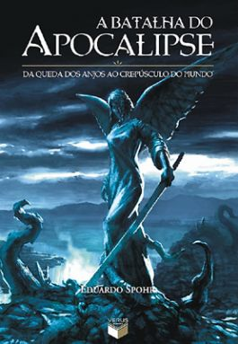

- Título: A Guerra Dos Tronos - As Crônicas de Gelo e Fogo - Livro Um
- Autor: Martin, George R. R.
- Editora: LeYa
- Paginas: 592
- Rating: 5.0/5.0
- Tempo de leitura: 15 dias
- Título: A Fúria Dos Reis - As Crônicas de Gelo e Fogo - Livro Dois
- Autor: Martin, George R. R.
- Editora: LeYa
- Paginas: 656
- Rating: 5.0/5.0
- Tempo de leitura: 17 dias
- Título: A Tormenta de Espadas - As Crônicas de Gelo e Fogo - Livro Três
- Autor: Martin, George R. R.
- Editora: LeYa
- Paginas: 848
- Rating: 5.0/5.0
- Tempo de leitura: 25 dias
- Título: O guia do mochileiro das galáxias
- Autor: Douglas Adams
- Editora: Sextante
- Paginas: 208
- Rating: 4.3/5.0
- Tempo de leitura: 2 dias

- Título: A Batalha do Apocalipse
- Autor: Eduardo Spohr
- Editora: Verus Editora
- Paginas: 586
- Rating: 5.0/5.0
- Tempo de leitura: 30 dias